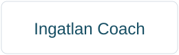

Adminisztráció
Dokumentumok, számlák, határidők rendszerezése.
Elfoglalt cégvezetőknek segítünk rendszert, kontrollt és átlátható működést építeni, hogy adatokra támaszkodva, nyugodtan vezethessék vállalkozásukat.
Ingyenes konzultációDokumentumok, számlák, határidők rendszerezése.
Dashboardok és riportok a vezetői döntésekhez.
Papírmentes és fenntartható adminisztráció.
Operatív feladatok professzionális támogatása.
adminisztrációs idő csökkenés
gyorsabb működési folyamatok
átlátható dokumentáció
átlagos reakcióidő

Az NK Stúdió az AOC System hivatalos partnere.
Foglalj konzultációt, és nézzük meg hogyan tehetjük átláthatóbbá a vállalkozásod működését.